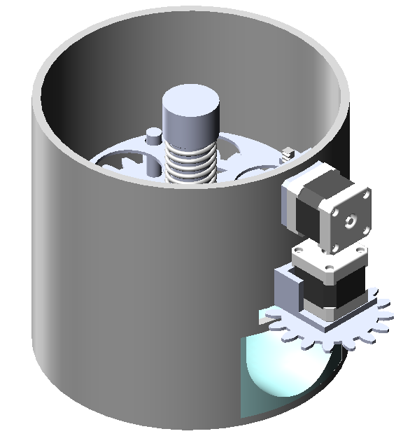

This figure shows a model of the final design. The main cover is for the electronics as well as act as a small tray for the peeled eggs to rest on while the other eggs are being peeled. This main cover, showed in cyan in Figure 1, is printed using a FDM 3D printer as the geometry is too tall and hollow for any subtractive manufacturing process to be viable. More specifically, the cover mainly protects the two stepper motors as well as the main gear that provides rotational motion to the egg tray.
This figure shows a more detailed how the egg tray assembly is put together. Each of the holes in the tray accommodates one egg, and the bottom plate of the tray essentially acts as a large gear. The top plate of the tray has identical hole locations as the bottom plate and is lined up using three locating pegs that protrude up from the bottom plate. Finally, a spring retention cap is threaded along the center axis to ensure that the top plate is always clamped down. In order to keep the weight of the whole project down, the whole tray assembly will be made out of acrylic, as the main load seen by the egg tray assembly is simply the weight of the eggs.